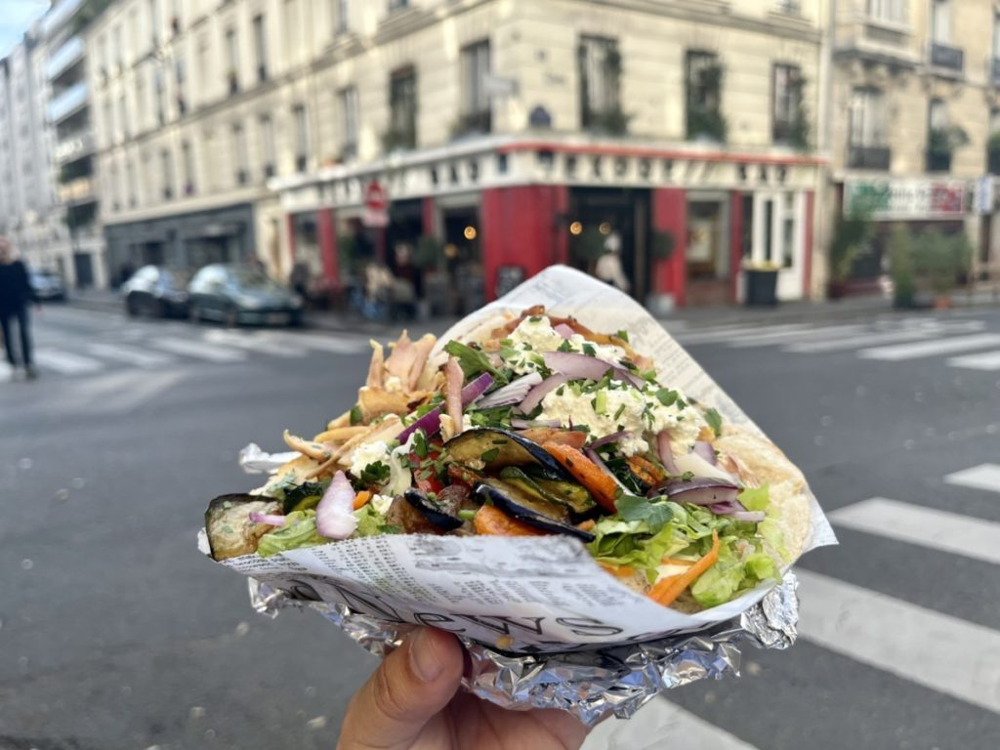

Berlińskie kebaby, znane z obfitości i wyjątkowego smaku, są prawdziwą ucztą dla podniebienia. Berlin, miasto o bogatej historii imigracji, stał się europejską stolicą kebabów, głównie dzięki tureckiej społeczności, która osiedliła się tam w drugiej połowie XX wieku.
Jednym z najbardziej znanych rodzajów kebaba w Berlinie jest doner kebab, którego stworzenie przypisywane jest Kadirowi Nurmanowi. W latach 70. Nurman wpadł na pomysł podania mięsa doner z sałatą, pomidorami i cebulą w bułce, tworząc jedzenie na wynos, które szybko zyskało popularność wśród berlińczyków i turystów.
Dziś berlińskie kebaby są nie tylko smaczne, ale także różnorodne. Można znaleźć wersje z kurczakiem, jagnięciną, wołowiną, a także opcje wegetariańskie i wegańskie, jak falafel czy halloumi. Do tego dochodzą różne sosy: klasyczny czosnkowy, ostry, jogurtowy, a także warianty inspirowane kuchnią międzynarodową.
Kebaby w Berlinie to jednak nie tylko jedzenie – to także symbol wielokulturowości miasta i jego otwartości na różne tradycje kulinarne. Spróbować ich można niemal na każdym rogu, a niektóre miejsca, jak Mustafa’s Gemüse Kebab, stały się legendarnymi punktami gastronomicznymi, przyciągającymi tłumy zarówno lokalnych mieszkańców, jak i turystów.
KEBAB HOUSE GLIWICE
Jednym z najbardziej polecanych lokali oferujących kebaba w Gliwicach jest "Kebab House"1
Jest to popularne miejsce, które zdobyło bardzo pozytywne opinie mieszkańców2
Kebab House oferuje szeroki wybór kebabów, w tym tradycyjne tureckie smaki oraz nowoczesne wariacje3
Opis Kebab House:
Menu: Kebab House oferuje różnorodne kebaby, takie jak döner kebab, shawarma, gyros oraz kebabs z kurczakiem, indykiem i ziemniakami3
Atmosfera: Lokal ma przyjazny i przytulny klimat, idealny na spotkania z przyjaciółmi lub rodziną